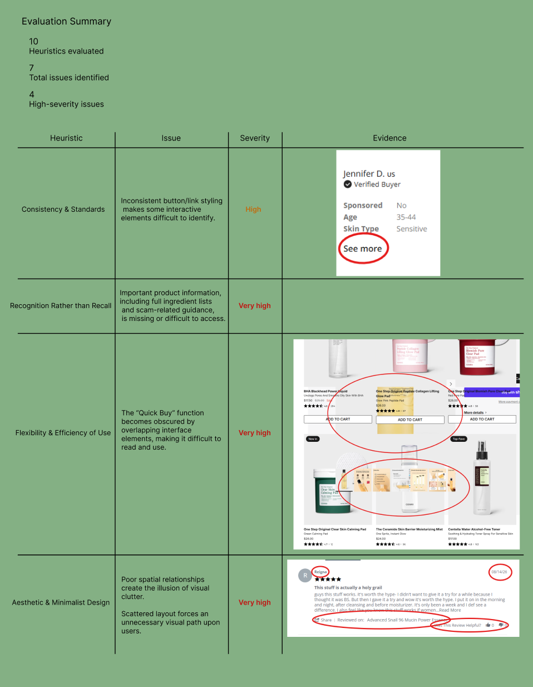

The Challenge
Does COSRX's digital experience reflect the same simplicity, transparency, and trust as its brand?
COSRX is built around a minimalist approach to skincare. I wanted to explore whether those same principles carried into its digital experience and identify opportunities to improve usability without compromising the brand's visual identity.
The Problem
A heuristic evaluation of two key pages uncovered three recurring usability problems.
Difficult
to Scan
Important content competed with secondary information.
Unclear
Interactions
Some elements created misleading expectations about how they behaved.
Weak Content
Hierarchy
The interface didn't always prioritize the information users needed to understand products or make decisions.
Why It Mattered
Clear, transparent information helps users make more informed decisions.
The goal wasn't simply to make COSRX's pages look cleaner. It was to create an experience that better aligned the interface with the brand's values while helping users find information, understand products, and make decisions with confidence.
Research
Evaluating the experience through Nielsen's usability heuristics
I evaluated two key COSRX pages against Nielsen's 10 usability heuristics, documenting issues based on their potential impact on users and prioritizing the highest-severity findings for redesign.

Design Principles
Clarity
Make important information easier to find and understand.
Consistency
Create predictable visual patterns for interactive elements.
Hierarchy
Prioritize content based on what users need to see and accomplish first.
Trust
Surface critical information that helps users make confident decisions.